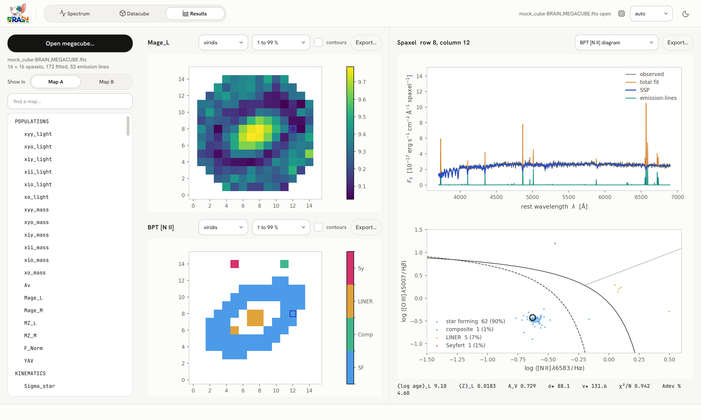
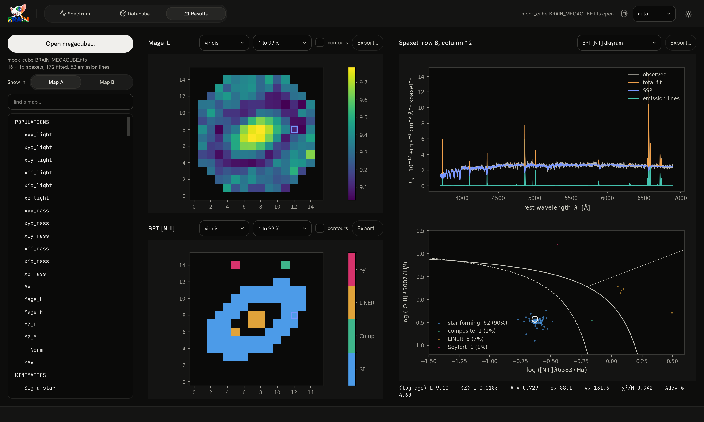

Exploring a megacube#
The Results workspace opens a megacube and shows what the fit found: any two maps side by side, and for any spaxel its spectrum with the fit, its star formation history, its emission-line diagnostics and its numbers. It reads the file only; nothing is fitted here.


The Results workspace. Left: the list of maps. Middle: Map A (the light-weighted mean age) and Map B (the BPT [N II] class). Right: the spectrum and the star formation history of the spaxel clicked, and its numbers underneath.
Open a megacube#
Press Open megacube… and choose a *-BRAIN_MEGACUBE.fits file, or press View results at the end of a datacube run, which opens the megacube it wrote. The line under the button gives the file’s name, its size, the number of spaxels fitted and the number of emission lines.
The maps#
The list on the left holds every map the file can draw, grouped:
Group |
Maps |
|---|---|
Populations |
light and mass fractions of the age bins, mean ages and metallicities, \(A_V\), \(Y_V\), the normalisation flux |
Kinematics |
\(\sigma_\star\) and \(v_\star\), and the dispersion and velocity of each gas group |
Fit quality |
\(\chi^2\), adev, S/N, the number of pixels fitted and of iterations, and the fit status |
Emission lines |
every line’s flux, equivalent width, velocity and dispersion |
Diagnostics |
the BPT [N II], BPT [S II] and WHAN classes |
Nebular |
in |
Line-spread function |
the intrinsic \(\sigma_\star\) and the instrumental correction behind it |
Uncertainties |
the 1σ error of each map that has one, as |
Type in find a map… to narrow the list. Show in decides whether the next map you click goes to Map A (top) or Map B (bottom).
Above each map:
Control |
What it does |
|---|---|
colour map |
|
scaling |
what the ends of the colour bar mean: the 1st to 99th percentile, the 5th to 95th, or the minimum to maximum |
contours |
draws contours over the map |
Export… |
saves the figure |
Spaxels that were not fitted are left blank. A spaxel whose uncertainty was withheld (a formal error in a poorly fitted spaxel) is blank in its error map, not zero.
One spaxel#
Click a spaxel on either map, or move from one to the next with the arrow keys (Shift moves by ten). The right-hand side then shows:
the spectrum, four curves, each drawn on its own:
curve
colour
what it is
observed
warm grey
the spectrum the fit was made to (
FLXOBS)total fit
amber
the SSP model plus the emission lines
SSP
blue, drawn on top
the stellar-population model (
FLXSYN)emission-lines
teal
the fitted Gaussians alone (from
SOLUTION), so this curve sits on zero fluxThe flux axis is \(F_\lambda\) in the unit the megacube declares, typeset (e.g. \(10^{-17}\) erg s\(^{-1}\) cm\(^{-2}\) Å\(^{-1}\) spaxel\(^{-1}\)). Click a legend entry to hide or show its curve; the choice is kept as you pick other spaxels. The total fit does not hold the straight-line continuum the line fit subtracts locally (the megacube does not store it), so between the lines it can sit slightly off the data where the SSP fit does;
the lower panel, chosen in the menu above it:
Star-formation history: the light fractions \(x_j\) and mass fractions \(\mu_j\), in per cent, against \(\log(t/\mathrm{yr})\), summed over metallicity at each age; the featureless (AGN) components have no age and are left out;
BPT [N II]: \(\log([\mathrm{N\,II}]\,\lambda6583/\mathrm{H}\alpha)\) against \(\log([\mathrm{O\,III}]\,\lambda5007/\mathrm{H}\beta)\);
BPT [S II]: \(\log([\mathrm{S\,II}]\,\lambda\lambda6716{,}6731/\mathrm{H}\alpha)\), the sum of the doublet, against the same \([\mathrm{O\,III}]/\mathrm{H}\beta\);
WHAN: \(W_{\mathrm{H}\alpha}\) in Å against \(\log([\mathrm{N\,II}]/\mathrm{H}\alpha)\);
every spaxel of the cube is drawn on the diagrams, and the picked one is circled;
the numbers of the spaxel underneath: \(\langle\log t\rangle_L\), \(\langle Z\rangle_L\), \(A_V\), \(\sigma_\star\), \(v_\star\), \(\chi^2/N\) and adev.
Drag a box on either plot to zoom into it; right-drag (or Shift-drag) pans; the wheel zooms the spectrum along wavelength (with Shift, along flux); a double-click shows the whole plot again. Export… above the right-hand side saves its figure.


A spaxel on the BPT [N II] diagram, with the demarcation curves of Kewley et al. (2001), Kauffmann et al. (2003) and Cid Fernandes et al. (2010).
The diagnostics#
The classes follow Kewley et al. (2001) and Kauffmann et al. (2003) for the [N II] BPT diagram, Cid Fernandes et al. (2010) for its LINER/Seyfert division, Kewley et al. (2006) for the [S II] diagram and Cid Fernandes et al. (2011) for WHAN. A class is drawn only where every line it needs has a positive flux. Line diagnostics gives the curves.
The same in Python#
Everything this workspace shows can be read and drawn in Python, with Megacube and brainsp.plots (Reading a megacube).